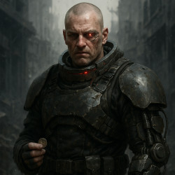
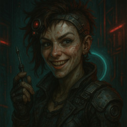

Kael Veyr
Status: at large, undercity of NeohHe moves like a man who carries storms inside him — dark hair in a restless tangle, a face hardened by loss rather than age. A shard hangs at his chest, pulsing faintly with a light that seems to borrow its rhythm from his own heartbeat, a secret he never quite meant to keep.
Shoulders tight as though bracing for a blow, steps carried with a strange defiance — every stride into the shadows another refusal to break. Kael Veyr does not look like a hero. He looks like someone the world already tried to bury, and failed.
Every vault remembers who it was built to keep out. This one was built for me. — Kael Veyr, The Mindweaver's Lie

Brann Ilex
Last confirmed act: rerouted Neoh undercity security, unconfirmed sinceA former Ascendant Guard shocktrooper, discharged after the Helix Square Incident and quietly excised of the memory — though never the skill. He still wears his modified restraint collar like a badge of honor, and moves with the methodical precision of siege equipment built for exactly one purpose.
He can't remember which house he served, or why he still calls some men "sir" without irony. He can remember to leave protein packs for gutter kids who never see him do it. Somewhere in the wreckage of what Neoh made him, something in Brann Ilex never quite finished being scrapped.
Run. I'll hold. — Brann Ilex

VB
Status: active, location withheldKnown to most simply as VB, she radiates a wild, unpredictable energy that makes her both magnetic and unsettling — hair shaved close on one side and left to tumble on the other, streaked with the grime and neon of whatever street she's currently claiming. A red implant gleams above her temple, pulsing like the beat of some hidden machine within.
No noble, no soldier, no tyrant — VB is a street-born storm, a saboteur grinning through the sparks she starts on purpose. The danger was never the tool in her hand. It was always her delight in using it.
Relax. If I wanted you dead, you'd already be sparking. — VB
Teo Carnicus
Status: active, moves between forges and marketsHe carries himself with a rogue's ease — lean-faced, tousled, a pair of wire-framed glasses giving him an air of harmless intellect that the glint behind them never quite backs up. Nine books of collecting curiosities, relics, other people's secrets. In the tenth, the collecting stops being academic.
Not imposing like his kin, not regal in bearing — Teo Carnicus thrives in shadows and markets, a trickster who can smile while drawing blood, and rarely needs to raise his voice to do it.
Everyone thinks the dangerous part's the knife. It's never the knife. — Teo Carnicus

Get word when a new world opens
No spam, no Overcode surveillance — just updates on new books, lore drops, and the soundtrack as it's released.